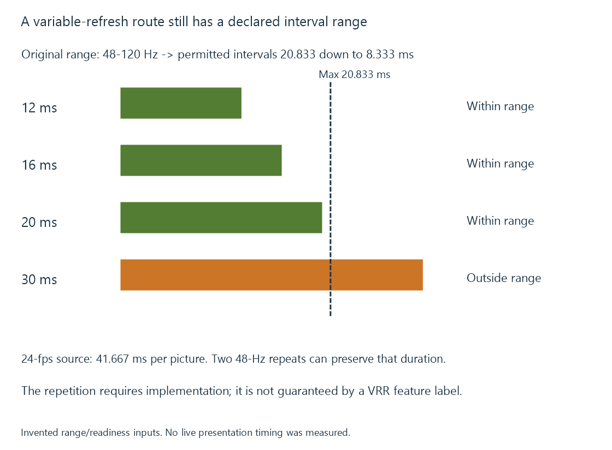

Variable refresh rate (VRR)
Variable refresh rate allows a supported display route to vary presentation intervals within a defined operating range.
Variable refresh rate, or VRR, lets a supported output vary the interval between refresh occurrences rather than using one fixed cadence throughout.
This can align presentation more closely with when new pictures become ready. Source, display, transport and application must all participate in the supported arrangement.
A variable interval still has limits
For an original example, suppose the accepted variable range is 48–120 Hz.
The reciprocal intervals are:
Fastest interval = 1000 / 120 = 8.333 ms
Slowest interval = 1000 / 48 = 20.833 ms
Picture-readiness intervals of 12, 16 and 20 ms fit inside that declared interval range. An interval of 30 ms does not.

This is an invented range, not a specification of every VRR screen. A product’s range can depend on its mode and connection.
HDMI VRR and DisplayPort Adaptive-Sync provide related presentation capabilities through their respective interfaces. Certification of motion performance and exposure of a transport feature also have different evidence scopes.
A low source rate can require repeated refreshes
An exact 24-fps movie has 41.667 ms between source pictures. That is outside the example’s 20.833-ms maximum refresh interval.
An implemented low-rate compensation arrangement could refresh the same picture twice at 48 Hz. Each interval is 20.833 ms, while the source picture lasts 41.667 ms in total.
The repeated refresh does not create another movie picture. It maintains the display timing while retaining the source-picture duration.
This exercise illustrates a possible relationship. The hardware/software route must actually implement the repetition or another supported policy; merely advertising a VRR range does not establish that behavior.
Regular film timing is a different use from irregular rendering
A game can finish pictures at irregular times. A fixed-rate movie already has a defined programme cadence.
For movie playback, an exact compatible fixed mode may give regular presentation without requiring arbitrary interval variation. A VRR feature is therefore not a universal prerequisite for smooth film motion.
It also does not remove motion blur recorded by the camera, the source’s limited temporal sampling or the display’s pixel/emission response.
Frame-rate matching develops the film cadence question. QMS uses a supported variable-refresh mechanism for a specific rate-switching purpose.
The application route decides what is used
A display supporting VRR does not force every browser or native player to use it. The operating system’s presentation mode, API flags and application integration determine the active route.
Microsoft documents those requirements for its DXGI implementation. They should not be generalized into a setting recipe for every platform.
See Also
- Vertical synchronization (VSync)
- Frame-rate matching at the display
- Quick Media Switching (QMS)
- Display refresh rate